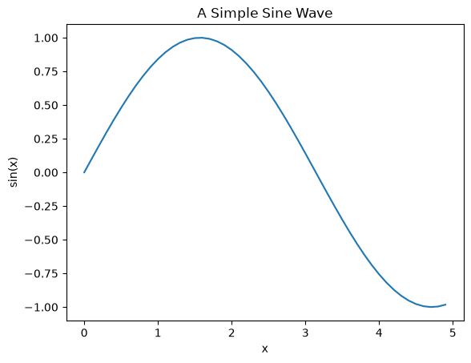
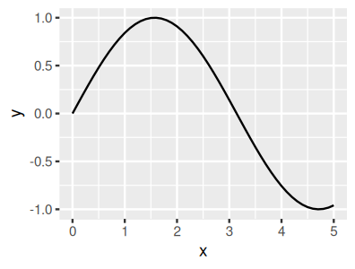

Introduction to Jupyter#
What is Jupyter?#
The Jupyter Notebook offers an interactive interface to multiple programming languages (including Python and R) that can be viewed and manipulated in web browsers.
Jupyter notebooks can run code, and also store the code and a current snapshot of the output (graphics and text), together with notes (in markdown), in an editable document called a notebook (like this one you are currently reading).
Thus a Jupyter notebook is similar to a Mathematica or Maple notebook. The difference is that Jupyter is free, fast improving, and unlike Mathematica or Maple notebooks, the Jupyter notebook can support over 100 programming languages (more on this below). Furthermore, Jupyter notebooks are saved on disk as a JSON files (with a .ipynb extension), so are fully open source and can be kept under version control.
Why use interactive notebooks?#
Jupyter is a great tool for “literate programming”, a software development style pioneered by Donald Knuth [Knuth, 1984]. He described the idea this way:
Let us change our traditional attitude to the construction of programs: Instead of imagining that our main task is to instruct a computer what to do, let us concentrate rather on explaining to human beings what we want a computer to do.
In literate programming, human-friendly text is as important as code, making coding accessible to a larger proportion of people.
And just as importantly, literate programming also helps address the generally poor reproducibility of scientific research by making your code and your methods better reproducible and reusable.
With Jupyter notebooks, you can explore quantitative ideas by combining snippets of computer code and human text. The main uses of Jupyter notebooks are:
Data science (e.g., with pandas)
Mathematical analyses (e.g., with sympy)
Interactive visualization (e.g., with matplotlib or ggplot)
Education and teaching
research communication and reproducibility
Jupyter Notebooks are increasingly being used as a research and teaching tool in academic institutions, government agencies (e.g., NASA, LIGO), as well as industry sectors (e.g., Google, Netflix, Bloomberg).
Key Jupyter features#
The Jupyter Notebook:
…allows you to keep notes using markdown, the increasingly popular markup language.
…offers features available in typical Interactive Development Environments (IDEs) such as code completion and easy access to help.
…has LaTeX support.
…can be saved and easily shared in the .ipynb JSON (JavaScript Object Notation – syntax for storing and exchanging data).
…can be kept under version control (e.g., with Git).
…can be rendered and viewed online (e.g., on gitHub).
…can be exported to multiple formats, including html, pdf, and slides.
Jupyter vs. Ipython#
Brian Granger and Fernando Pérez created Ipython (Interactive Python) as an implementation of Python for literate programming, taking advantage of improved web browser technologies (e.g., HTML5). Ipython notebooks quickly gained popularity (they were a great alternative to Mathematica and Maple as well), and in 2013 the Ipython team won a Sloan Foundation Grant to accelerate development of this technology. The Ipython Notebook concept was expanded upon to allow for additional programming languages, which became project Jupyter (why “Jupyter”? See this). Ipython itself is now focused on the interactive Python project per se, part of which is providing a Python kernel for Jupyter.
Your Jupyter notebooks will typically open in Ipython as well, but will not allow you Jupyter-only features (of course!)
Installing Jupyter#
First follow Python Installation and Environments to choose Python, create a coursework environment and verify its interpreter. Then use Add a Jupyter interface to install one interface into that environment.
Modern Jupyter Interfaces#
Jupyter Notebook 7 and newer provides a focused browser-based notebook interface. It is not the old classic Notebook 6 interface.
JupyterLab provides a tabbed workspace for notebooks, text editors and terminals. It uses the same notebook format and kernel system.
VS Code can open notebooks through its Jupyter extension. Its notebook kernel must be selected independently of any terminal environment. See VS Code for MQB.
The cell-based lessons below apply to both browser interfaces. Some historical screenshots show classic Notebook menus; use the equivalent command in your installed interface rather than downgrading to match an image. There is no need to install both browser interfaces to use obsolete extensions.
Installing and running Jupyter in a virtual environment#
A project environment keeps its Python packages separate from other projects. Use the creation and activation steps in Create and activate one environment, then confirm Python and pip agree using Verify Python and pip agree. Keep your notebooks outside the environment directory. Reopen an existing environment by activating it; you do not need to recreate or reinstall it each time.
Warning
A virtual environment is not a security sandbox. Notebook code still runs with your account’s permissions and can access your files and network. Dependency isolation does not make unfamiliar code safe.
The notebook document, the browser/editor interface, the Jupyter server, and the language kernel are distinct. The server manages documents and connections; the kernel executes code and holds variables in memory. Installing a package into the server’s environment does not install it into every kernel environment.
For package installation, interpreter diagnostics and recreating an environment, use Install the packages you need and Record and recreate an environment. Do not modify the MQB book-build environment to run your coursework.
Language Kernels#
The IPython kernel (ipykernel) runs Python code; other languages need their own kernels. Choose a Python kernel in the notebook’s kernel selector, then run this in a Python code cell:
import sys
print(sys.executable)
print(sys.version)
print(sys.prefix)
Compare the executable with your terminal’s Verify Python and pip agree check. A kernel name such as “Python 3” is a label, not proof of which environment is running. If imports fail, first check this path, install the package into that interpreter’s environment, and restart the kernel if needed. Changing environments in a separate terminal does not change an already-running kernel.
Optional named Python kernel#
When the server and coursework kernel use the same environment, the supplied Python kernel is usually enough. If Jupyter runs elsewhere, activate the coursework Python environment and register its already-installed ipykernel. First inspect jupyter kernelspec list and choose an unused name; registration overwrites an existing spec with the same name.
python -m ipykernel install --user --name mqb-course --display-name "Python (MQB coursework)"
jupyter kernelspec list
Here --user writes a small kernel registration for your account; it is not a pip --user package installation. Select “Python (MQB coursework)” in Jupyter and repeat the executable check. The IPython kernel installation guide also documents registration into a specific server environment with --prefix.
Before retiring an environment, stop its kernels, inspect jupyter kernelspec list, and remove only its own obsolete registration with jupyter kernelspec uninstall mqb-course (substitute the exact name). Review the path and confirmation. This removes the registration, not the Python environment or notebooks; deleting an environment alone can leave a stale kernel entry.
The R kernel#
R needs a separate R installation and the IRkernel R package; installing ipykernel does not provide R. Complete R Installation and User Libraries first, then start R from a terminal where the intended Jupyter installation is available. In the R console, inspect R.home(), .libPaths() and Sys.which("jupyter"). If Jupyter is missing, fix that terminal’s environment before registration.
For a machine with the required R/compiler/system-library prerequisites, install the released CRAN package into your writable R library and register it for your account:
install.packages("IRkernel", repos = "https://cloud.r-project.org")
IRkernel::installspec(user = TRUE, name = "mqb-r", displayname = "R (MQB)")
Choose an unused registration name first. Follow the current IRkernel installation and platform requirements when dependencies need compiling; do not install arbitrary system libraries merely because an R installation failed. A development GitHub install via devtools is not the normal CRAN route. After selecting “R (MQB)” in Jupyter, check R.version.string, R.home() and .libPaths() in an R cell, not a Python cell. Python virtual environments do not isolate R packages. R-kernel runtime verification is separate from the Python checks.
Adding extensions to Jupyter#
Start with the interface’s built-in facilities, including its table of contents, before adding extensions. Classic Notebook extensions such as jupyter_contrib_nbextensions and its configurator are not drop-in additions to Notebook 7 or JupyterLab. Consult the Notebook 7 migration guide and each extension’s supported interface/version before installing it.
For an extension you actually need, review its publisher and permissions, follow its current installation instructions in the server/interface environment, and test it on a disposable notebook. Record how to disable or uninstall it. An extension that can execute code has your account’s permissions. Do not enable all extensions or downgrade the main coursework environment just to reproduce a classic screenshot.
Launching/running a Jupyter Notebook#
Keep a coursework notebook in the project root, alongside code/, data/ and results/. In Linux or macOS, change to that root in a terminal, confirm it with pwd, activate the project’s Python environment, then launch the interface you installed:
jupyter lab # or: jupyter notebook
This starts a local server and opens its browser interface. Keep the terminal open while you use it.
Play around a bit. For starters,
\(\star\) Create a new notebook called MyFirstJupyterNb.ipynb in the project root. Do not put it inside code/: keeping it beside the three project directories lets both scripts and notebooks use paths such as data/input.csv and results/figure.png.
The next time you work on it, return to the project root and launch it by name:
jupyter notebook MyFirstJupyterNb.ipynb
Note
macOS users: The process is identical on macOS. The terminal commands work the same whether you’re using the default Terminal app, iTerm2, or any other terminal emulator. Just make sure you’ve activated your virtual environment first if you’re using one.
Using tmux#
You may notice that jupyter locks up the terminal you launch it from until it is closed. This can be particularly frustrating, and there is an elegant solution. Enter tmux!
tmux is a “terminal multiplexer”, allowing you to run terminal sessions independent of (or “detached” from) a terminal window. You can install tmux using apt:
sudo apt install tmux
Detaching and reattaching#
To run jupyter in a tmux session, start tmux using the command tmux. From here you can use the tmux terminal as you would your usual terminal session (so launch jupyter notebook as before), however if at any time you decide that you want to do something else, you can detach.
To detach your terminal window from the session, use the shortcut ctrl+b, d (ctrl+b, then let go of that and hit d). This kicks you back to the normal terminal, however your other session is still running in the background.
To see which sessions are currently running, use
tmux ls
And to attach to the session:
tmux a
Note: you can attach to a session from a different terminal window or even terminal program!
To quit tmux entirely, just quit the terminal session either with ctrl+d or exit
Why use tmux?#
While this is mostly just a quality of life suggestion, countless are the times that I have accidentally closed my terminal only to find that my jupyter session has also died. By decoupling the window from the terminal session, this no longer happens.
Additionally tmux is absolutely invaluable when running long jobs on a remote server. In this case you can simply disconnect from the tmux session on the remote server. Then you can log in later (and/or from a different computer) and reattach to the interactive session (using tmux a) to check progress. In combination with good logging for long jobs, this can make your life infinitely easier.
Using Jupyter in VS Code#
VS Code can keep notebooks, scripts and an integrated terminal in one project window. Follow VS Code for MQB to install the Microsoft Python and Jupyter extensions, open a project folder, select the intended interpreter and choose a notebook kernel.
Open the project root as the VS Code folder and keep the notebook itself in that root. A notebook’s kernel is separate from the terminal and can retain variables between runs. Check both sys.executable and Path.cwd() in the first Python cell, save before changing kernels, and restart the kernel before a clean reproducibility run. The setup page explains this process; Language Kernels covers named Python and R kernels.
Key elements of the Jupyter nb content#
The two main elements (and the associated syntax) you need to know to modify the content of a Jupyter nb are as follows. These will either be entered into text-only cells (“markdown cells”), or code cells. To insert a new cell, click on the edge of an existing cell, and hit A or B on your keyboard to insert a cell above and below, respectively. By default, Jupyter inserts a code cell. To convert it to a text cell, hit M immediately after inserting the cell, or if you have clicked elsewhere after inserting the cell, by clicking on the edge of the new cell and then hitting M. You can now either enter and modify text or code:
Text cells#
Text is formatted using markdown and standard html. The markdown cheatsheet for github is very handy. Give it a quick spin to get started with markdown.
Equations#
You can insert inline or standalone equations by using standard \(\LaTeX\) environments (and you can access more \(\LaTeX\) functionality and environments using the la-te-x_envs extension.). For example, how about the ecologist’s beloved logistic growth equation:
$$
\frac{dN}{dt} = rN \left( 1-\frac{N}{K}\right)
$$
which will render as:
Code cells#
Depending on your kernel, you will type the appropriate programming language code in these cells.
Keyboard shortcuts#
A full list of keyboard shortcuts can be displayed by clicking outside the current cell and hitting “h”. The following are important keyboard shortcuts:
Key |
Command |
|---|---|
|
insert cell above or below current cell, respectively |
|
convert code or raw cell to text cell |
|
convert raw or text cell to code cell |
|
convert code or text cell to raw cell |
|
render (text) or evaluate (code) cell |
|
delete cell |
|
interrupt a running kernel (evaluation of a code cell) |
|
cut selected cell(s) |
|
Insert cell(s) cell above selected cell |
|
Insert cut cell(s) below selected cell |
|
merge selected cells, or current cell with cell below if only one cell selected |
For a full list of keyboard shortcuts or to cutomize them, click anywhere outside your current cell and hit the H key. Or, click on the “help” menu item at the top.
Running code#
Let’s try running code in a code cell. Python first. Make sure that your kernel is Python using the dropdown Jupyter nb menu. Then try the following:
a = "this is python!"; print(a)
this is python!
You can also run a script file that is saved on your computer by using the ipython %run command — basically you have a fully functional ipython environment inside each code cell.
Now R. Switch the kernel to R by using the Kernel menu along the top of the Jupyter window.
Then try:
a <- "this is r!"; cat(a)
this is r!
Graphics#
Plotting is straightforward. Again, let’s try Python first. Switch back to the Python kernel. Then try:
Note
In Jupyter notebooks, you typically need to use %matplotlib inline to display plots inline. In VS Code, this is handled automatically.
%matplotlib inline
import matplotlib.pyplot as p
import numpy as np
x = np.arange(0, 5, 0.1)
y = np.sin(x)
p.plot(x, y)
p.xlabel('x')
p.ylabel('sin(x)')
p.title('A Simple Sine Wave')
p.show()

Now let’s try R. Switch to the R kernel, and try:
Tip
For interactive visualizations, you might also explore libraries like plotly (python) or plotly for R, which create interactive plots that you can zoom, pan, and hover over.
require(ggplot2)
library(repr)# to resize plot within jupyter - this package is part of IrKernel
options(repr.plot.width=3.3,repr.plot.height=2.5)
x <- seq(0, 5, 0.1); y <- sin(x)
qplot(x, y, geom = "line") # large figure
Loading required package: ggplot2
Warning message:
“`qplot()` was deprecated in ggplot2 3.4.0.”


Exiting a Jupyter Notebook#
Exiting is easy. Just Ctrl+S (or Cmd+S on macOS) to save and close the browser. The server will still be active in the bash terminal. You may then relaunch by typing the local url (e.g., by typing http://localhost:8888/notebooks/MyJupyterNbName.ipynb) in your web browser window, or by exiting the kernel with Ctrl+C (or Cmd+C on macOS) and then relaunching as described in the installation guidance.
Note
If you’re using VS Code, simply close the notebook tab. The kernel will stop automatically when VS Code closes, or you can manually stop it using the kernel status button in the top right of the notebook.
Congratulations!#
You’ve completed the introduction to Jupyter notebooks! You should now understand:
What Jupyter is and why it’s useful for scientific computing and literate programming
How to install and set up Jupyter on both Linux and macOS
Different ways to use Jupyter (classic notebook, JupyterLab, VS Code)
How to create, run, and manage notebooks
Best practices for creating reproducible, maintainable notebooks
Play around a bit with what you’ve learned. You can also try out the Data in Jupyter and Maths in Jupyter tutorials to continue learning.
Best Practices for Jupyter Notebooks#
As you develop your skills with Jupyter notebooks, following these best practices will help you create more maintainable, reproducible, and professional work:
Organization and Structure#
Use descriptive cell titles: Add markdown cells with headers to organize your notebook into logical sections
One concept per cell: Keep code cells focused on a single task or concept
Maintain logical flow: Execute cells in order from top to bottom; avoid jumping around
Document as you go: Add explanatory text before complex code blocks
Code Quality#
Import all libraries at the top: Keep all
importstatements in the first code cellUse meaningful variable names: Avoid single letters except for common conventions (e.g.,
x,yfor coordinates)Add comments: Explain why you’re doing something, not just what you’re doing
Keep cells reasonably sized: If a cell is getting too long, consider breaking it up
Version Control#
Clear outputs before committing: Use “Clear All Outputs” before committing to Git
This keeps diffs clean and reduces file size
In VS Code: right-click notebook → “Clear All Outputs”
In Jupyter: Kernel → restart & Clear Output
Use
.gitignore: Add common files to.gitignore:.ipynb_checkpoints/ __pycache__/ *.pyc
Consider
nbstripout: This tool automatically removes outputs when committing:pip install nbstripout nbstripout --install
Reproducibility#
Document your environment: Create a
requirements.txtfile:pip freeze > requirements.txt
Set random seeds: When using random numbers, set seeds for reproducibility:
import numpy as np np.random.seed(42)
Restart and run all: For a single-language analysis notebook, periodically test that it runs from start to finish:
Kernel → restart & run All
Check the working directory before using a relative path: A notebook kernel does not necessarily start at the project root. Keep your coursework notebook in the root, inspect the location in its first cell, and stop early if the expected project folders are absent:
from pathlib import Path project_root = Path.cwd() required = [project_root / name for name in ("code", "data", "results")] missing = [path.name for path in required if not path.is_dir()] if missing: raise FileNotFoundError("Open this notebook from the project root; missing: " + ", ".join(missing))
Performance and resources#
Close notebooks when done: Notebooks continue to use memory even when idle
Monitor memory usage: Large datasets can exhaust memory; consider:
Processing data in chunks
Using data types efficiently (e.g.,
int32instead ofint64when appropriate)Clearing large variables with
del variable_name
Use
%%timefor profiling: Add%%timeat the start of a cell to measure execution time
macOS-Specific Tips#
Use
Cmd+Sfrequently: Save your work regularly (or enable auto-save)Terminal integration: macOS terminal commands work in notebook cells with
!prefix:!ls -la !pwd
File paths: macOS uses forward slashes like Linux (
/Users/...)Hidden files: Use
!ls -lato see hidden files starting with.
Tip
For coursework submissions, restart the selected kernel and run all cells from top to bottom. This introductory page is an exception because it asks you to switch the whole notebook between Python and R for short demonstrations; apply the check to each of your own single-language analysis notebooks.